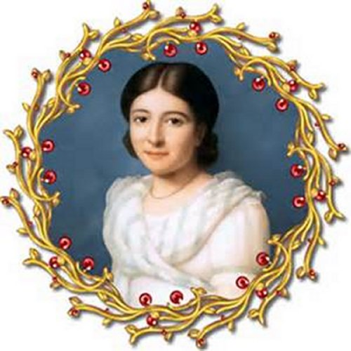

"VENERÁVEL
PAULINE-MARIE
JARICOT"

"COM INSPIRAÇÃO DIVINA, ELA CRIOU A ADMIRÁVEL E EFICAZ OBRA DE PROPAGAÇÃO DA FÉ, QUE AJUDA AS MISSÕES E OS MISSIONÁRIOS EM TODAS AS PARTES DO MUNDO".


=ÍNDICE=
 -MISSÕES + FOTOGRAFIAS + E-MAIL + FIRMAS DE BUSCAS
-MISSÕES + FOTOGRAFIAS + E-MAIL + FIRMAS DE BUSCAS